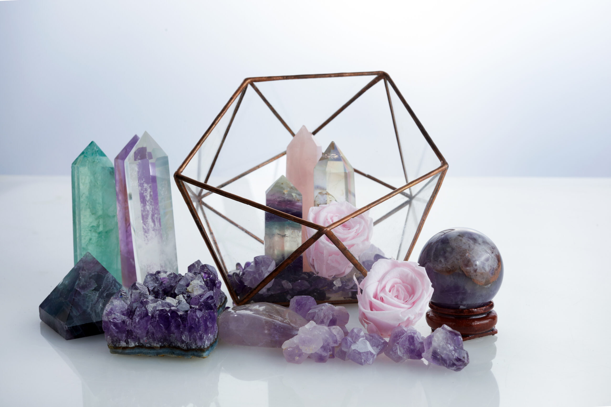

RITO DEL UTERO
El rito del útero es una Iniciación Sagrada que toda mujer puede hacer para recuperar su amor propio y las riendas de su vida

TAMEANA
En este taller aprenderas a realizar tameana consiguiendo la frecuencia adecuada para que el paciente la exoperimente
REGISTROS AKASHICOS
Al terminar el taller sabras abrir registros akashicos a otras personas y aprender a ser el mediador entre el paciente y sus guias espirituales